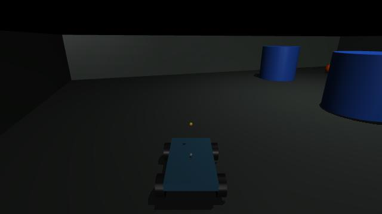
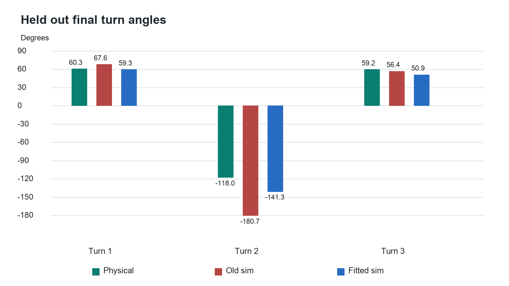

Robotics Engineering: Your Two-Hour Practical Class
Jack Coleman | 30 September 2026 | Laptop only; no robot connection required
What you will get from today
By the end, you should be able to trace an image into a motor command, calculate a turn, explain a neural-network update, judge a simulation experiment, and investigate a failed robot without guessing. You will practise each skill, not just read its name.
Two hours cannot establish job readiness across all robotics specialities. There is no universal list that makes someone eligible for every robotics role. Your most direct route, given your software background, is robotics software and systems engineering, with depth in perception or simulation. That is a recommendation about where to focus, not a claim that your current project satisfies every hiring requirement.
Today prioritises the principles that connect the fields. The final section maps the remaining competencies to concrete work you can demonstrate.
How to study
Sections 3-6 have been rewritten as guided lessons: a concrete problem, a worked example, an explanation of each new term, then a small variation for you to try. If you stopped at the old control-section question, resume at Section 3. Do not restart the entire course.
The times are a suggested pace, not a deadline for understanding. Read the main lesson and try its example before opening anything marked Optional. The optional material and career/reference sections are for later. No exercise requires a live rover. The controls in Sections 3 and 4 are teaching calculations; the command in Section 5 runs actual MuJoCo physics.
Use paper for diagrams and calculations; use the laptop for experiments. Write what changed, why it changed and what still confuses you. You are not expected to derive a new formula or explain an unfamiliar term before seeing it worked through.
| Elapsed time | Topic | Something you will actually do |
|---|---|---|
| 0-15 minutes | 1. The complete robot | Trace a stale image to a safe stop |
| 15-35 minutes | 2. Geometry and state | Calculate a turn and transform a point |
| 35-55 minutes | 3. Control and actuators | Calculate feedback and stopping distance |
| 55-80 minutes | 4. Vision and learning | Decode a box and change a neural weight |
| 80-105 minutes | 5. Simulation and evidence | Run real MuJoCo and critique the comparison |
| 105-120 minutes | 6. Engineering practice | Design a failure investigation and assess gaps |
The mathematical examples are explicitly labelled classroom examples, not measurements of your chassis. Saved measurements and newly executed tests are labelled separately.
1. The Complete Robot | 0-15 Minutes
Question: How does a picture eventually make a wheel turn?
Start with the physical chain
Your camera measures light. Its output is an image, already a rectangular array of numbers. A vision model consumes that array and predicts an object's class and bounding box. A controller uses that observation to request motion. A motor driver switches battery current through a motor. The motor creates torque, and wheel-floor contact creates movement. A later observation tells the controller what actually happened.
CAMERA PERCEPTION DECISION ACTUATION
pixel array --> target box -------> turn request ---> motor driver
^ |
| v
next camera frame <--- changed world <-- wheel motion
IMU angular rate --> estimated heading --> turn feedback
The crucial difference from ordinary web software: output changes the world, and the world keeps moving while software is late. A correct answer to an old image can be the wrong action now.
Your historical implementation was: Pi camera -> JPEG over HTTP -> Jetson detector -> explicit mission/controller logic -> HTTP request -> Pi controller/watchdog -> GPIO -> TB6612 driver -> motor battery -> motors. The Mac also provided an SSH forwarding path. It was not an independent robot that no longer needed the Mac.
Separate these responsibilities:
| Component | Question it answers | Example output |
|---|---|---|
| Perception | What can the sensors see? | Orange box at pixel coordinates |
| State estimation | Where/how am I moving, with what uncertainty? | Heading estimate of 12 degrees |
| Planning | What movement sequence should achieve the goal? | Route around an obstacle |
| Control | What command should I send now to follow that plan? | Wheel-speed requests |
| Safety supervision | Is that command permitted and still current? | Stop because the command expired |
These are distinct jobs, even when one Python file contains several of them. A detector is not a planner. A simulator is not a controller. A neural network can implement one component without replacing the others.
What your project demonstrated
The saved project separates three experiments. First, physical object approach used a pretrained image detector and explicit control logic. Second, physical turn measurements were used to improve simulator parameters. Third, a small navigation network was trained and evaluated in simulation. They were not one end-to-end AI trained to explore your house. Physical room mapping and validated deployment of that simulated policy were not completed.
Experiment A: A Visible Object Can Still Require Stopping
These commands execute existing project geometry and decision functions on the Mac. They do not contact a Pi, Jetson or motor. The box is supplied by the exercise, not produced by a fresh camera or detector.
In Terminal, enter the two setup lines once. PY names the existing Python environment; LESSON names the existing exercise. These variables only shorten the following commands.
PY=/Users/jackcoleman/Developer/rover-learning/runtime/.venv/bin/python
LESSON=/Users/jackcoleman/Developer/rover-learning/project/software/learning/rover_workshop.py
"$PY" "$LESSON" vision
"$PY" "$LESSON" vision --frame-age-ms 900
Before running: predict whether the second command should turn, approach or stop. 900 ms means the observation is 0.9 seconds old.
Inspect: box.horizontal_error, operation.action.state, operation.execution, and signed_pwm_fraction. Ignore the long configuration listing initially. It records the defaults used by this exercise, not a live device's settings.
Answer and verified result
The default 100 ms observation produces aligning, a 35 ms motor-pulse request, and signed left/right fractions [0.24, -0.3] with the exercise's assumed calibration. These are requested electrical efforts, not measured wheel speeds. The 900 ms observation produces stale_frame, stop, and [0.0, 0.0], despite the identical box. The configured frame-age limit is 500 ms. Both outcomes were rerun successfully when this class was prepared.
This proves this particular software decision behaves as specified for these inputs. It does not prove a disconnected motor would physically stop, or that camera timestamps on two devices are correctly synchronised.
Your notes: Draw the physical chain from memory. Mark which arrow carries pixels, which carries a command, and which carries electrical power. Explain why a browser can show a target while the robot correctly refuses to move.
2. Geometry and State | 15-35 Minutes
Question: What does "the object is on the right" actually mean?
A number needs units, a frame and a time
x = 2 is incomplete. Two pixels? Two metres? Relative to the camera, chassis or room? Measured when?
A coordinate frame is an origin with named axis directions. A pose is position plus orientation. For a rover on a flat floor, a useful pose is (x, y, theta): two positions in metres and a heading angle. A state may add forward velocity, angular velocity and sensor biases. An observation is what a sensor reports. State is what we want to know; observations are imperfect clues.
Use these conventions for today's calculations: chassis x points forward, y points left, z points up; positive yaw turns left when viewed from above. Angles inside code use radians. One complete turn is 2*pi radians; 90 degrees is pi/2. Camera optical axes often differ: x right, y down, z forward. A camera-right observation therefore does not automatically have the same sign as positive chassis yaw. ROS coordinate conventions.
Your rover's historical custom turn command uses its own convention. Do not replace its sign with the classroom convention without tracing the adapter and testing it. Integration requires explicit conversions, not a guess that every positive number means left.
Transform a point
Suppose the robot is at room position (2, 3) metres, facing 90 degrees from the room's x axis. A point one metre in front of the robot has chassis coordinates (1, 0).
x_room = x_robot + cos(theta)*x_body - sin(theta)*y_body
y_room = y_robot + sin(theta)*x_body + cos(theta)*y_body
theta = 90 degrees: cos(theta) = 0, sin(theta) = 1
point in room = (2, 4) metres
The rotation changes which direction "forward" points. The translation adds the robot's position. This is the two-dimensional version of a rigid transform. Robot arms use the same idea through a chain of joint and tool frames: a camera's target must be transformed into the frame used to command the gripper.
Exercise: The robot moves to (4, 1) and faces 180 degrees. Where is the point (1, 0.5) in chassis coordinates, expressed in the room?
Answer
At 180 degrees, cosine is -1 and sine is 0. The point becomes (4 - 1, 1 - 0.5) = (3, 0.5) metres. Both chassis axes point opposite the room axes.
How Wheel Speeds Produce a Turn
Kinematics relates motion to motion, without calculating the forces that caused it. Approximate the left wheels as one group and right wheels as another. Let v_L and v_R be forward wheel-ground speeds in metres/second, and b the distance between the sides in metres.
forward speed v = (v_R + v_L) / 2
yaw rate omega = (v_R - v_L) / b
position change over a short dt:
x_next = x + v*cos(theta)*dt
y_next = y + v*sin(theta)*dt
theta_next = theta + omega*dt
If the right side advances farther, the robot rotates left. If both sides move equally, it goes straight in this ideal model. omega has units (m/s)/m = 1/s, conventionally radians/second.
Classroom calculation: v_L = 0.20, v_R = 0.30, b = 0.20. Then v = 0.25 m/s and omega = 0.5 rad/s, or about 28.6 degrees/second. The centre follows a circle of radius v/omega = 0.5 m for constant speeds.
This is a first approximation, not an exact model of your four fixed-wheel skid-steer chassis. Turning requires tyre slip; the effective turning response changes with surface and load. Also, wheel speed is not PWM percentage. A command of 0.30 does not mean 0.30 m/s.
Exercise: What happens if both sides move at 0.25 m/s? What if the left is -0.20 and right is +0.20, with b = 0.20?
Answer
Equal speeds: v = 0.25, omega = 0, straight in the ideal model. Opposite speeds: v = 0, omega = 2 rad/s, rotation about the centre. Actual slip and actuator limits change the measured result.
How the MPU Helps, and What It Cannot Observe
The MPU's gyroscope measures angular rate, not absolute heading. Tiny vibrating structures respond to rotation; electronics convert that response to numbers. The accelerometer measures specific force, including the support force that keeps a stationary board from falling. Neither directly measures wheel rotation or the robot's position on a floor.
Your vertically mounted sensor was tested to identify sensor Y as the chassis yaw axis. Secure vertical mounting is fine; an unknown axis or a moving mount is not.
estimated_heading += (measured_yaw_rate - estimated_bias) * dt
Bias is an offset that remains even when the true rate is zero. A remaining bias of 0.2 degrees/second produces 12 degrees of heading error in one minute. This is drift: integrated error accumulates. Forward acceleration integrated twice is even more sensitive to bias and gravity-estimation errors.
Sensor fusion combines complementary information with uncertainty. A one-dimensional teaching example: a predicted heading is 12 degrees with variance 4; an independent heading measurement is 10 degrees with variance 1. Variance describes squared uncertainty, here in degrees squared. Weight the more reliable measurement more strongly:
K = predicted_variance / (predicted_variance + measurement_variance)
= 4 / (4 + 1) = 0.8
updated_heading = 12 + 0.8*(10 - 12) = 10.4 degrees
This is the correction idea behind a Kalman filter in a simple linear, unbiased, independent-noise case. Full robotics estimators also propagate motion and uncertainty, handle coordinate changes and reject bad measurements. Two estimates derived from the same gyro are not independent evidence.
Your notes: Explain why a gyro can help stop a 60-degree turn but does not tell you that the robot is two metres from a doorway. Take a two-minute break before Section 3.
3. Control and Actuators | 35-55 Minutes
By the end: explain why setting motor percentages once is different from correcting a turn while it happens. We will start with the drift you saw on your rover. The technical names come after the examples.
3.1 What a Motor Percentage Actually Does
You pressed Forward. The Pi sent control signals to the TB6612 boards. Those boards switched current from the motor battery through the motors. The motor created a twisting force, called torque, and the wheels moved. The Pi supplied the instructions; the battery supplied the energy.
When we set a motor to 40%, we did not ask it to turn at a measured speed. We asked its driver to switch on for 40% of each rapid switching cycle. For example, in an illustrative one-millisecond cycle, the output is on for 0.4 milliseconds and off for 0.6. This technique is pulse-width modulation, shortened to PWM. Its on-time percentage is the duty cycle.
The wheel does not stop and restart on every pulse. Electrical current and mechanical motion do not change instantly, so the rapid switching produces a smoother response. But a wheel under more load may turn more slowly at the same percentage. Battery voltage and connection quality also matter. Therefore, a motor command is not a measurement of wheel speed.
3.2 First Approach: Remember What Worked Last Time
You previously tried settings such as 40% left and 60% right. Suppose that combination made the rover travel straight on one test. We can reuse it next time without checking the current movement.
That is a feedforward setting: an output chosen in advance using what we already know. Here it is a fixed left/right compensation. It says, "This side usually needs more effort."
It does not say, "I can see that we are turning left right now." If the floor changes, the battery weakens or a connection moves, the old compensation may no longer work. Repeatedly adjusting percentages by eye is manual calibration; it is not the rover correcting itself.
3.3 Second Approach: Measure the Result and Correct It
Now suppose software wants to keep the rover pointing in its starting direction. Call that direction 0 degrees. The IMU measures rotation rate. Software adds up those measurements over time to estimate the change in direction, which we call heading.
If the estimated heading becomes 5 degrees left, the rover has drifted left. Software can ask the left side to advance more than the right side, requesting a rightward correction. It then measures again. This repeated use of the measured result is feedback.
The IMU does not choose percentages. It supplies measurements; the controller chooses percentages using those measurements.
Here is the complete arithmetic for a classroom controller. These numbers illustrate the mechanism; they are not new settings being sent to your rover.
| Step | Calculation | Meaning |
|---|---|---|
| Choose a starting effort | Left 40%, right 40% | Feedforward starting point for this example |
| Read the heading | 5 degrees left of the desired direction | Feedback measurement |
| Calculate the error | Desired 0 minus measured +5 = -5 degrees | We need a rightward correction |
| Choose the reaction strength | 2 percentage points per degree | Called the controller's gain |
| Calculate the correction | -5 times 2 = -10 percentage points | Size and direction of adjustment |
| Mix it into wheel commands | Left: 40 - (-10) = 50%; right: 40 + (-10) = 30% | Request a rightward correction |
Notice that the gain converts degrees of error into percentage points of motor effort. A higher gain responds more strongly to the same error. This example is called proportional control because twice the error requests twice the correction, until a limit is reached.
3.4 What If the Calculation Requests Too Much?
With a 30-degree error, the same gain asks for a 60-percentage-point correction. We may decide that is too aggressive. Put a limit on the correction: no more than 20 percentage points in either direction.
The calculation asks for 60; the permitted value is 20. That limiting is called saturation. It means the output has reached a bound and cannot increase further. It is not the motor becoming tired, and it is not a sensor reading.
In the example above, a large leftward error would therefore produce left 60%, right 20%, not left 100%, right -20%. The numbers stay within our chosen correction bound.
3.5 What If the Measurement Stops Arriving?
Suppose the last measurement says we are 5 degrees left, but the IMU data stops updating. We must not apply a rightward correction forever. A rule can say: "If this measurement is older than the permitted age, request zero motor effort."
That is a timeout: permission expires after a specified time without a valid update. In the teaching calculation below, the limit is 500 milliseconds. This is an example limit, not a claim about the live heading controller's configuration.
Your saved system also had two distinct protections: the camera decision rejected frames older than its configured 500 ms limit, and the Pi motor controller expired commands after about 350 ms without refresh. The first checks whether the observation is current; the second checks whether anyone is still actively commanding the motors. Neither guarantees safety against every electrical or software failure.
3.6 Try the Calculation Here
This exercise calculates requested percentages only. It does not simulate wheel motion or contact hardware. Positive heading below means left of the desired direction.
Work through these three changes in order:
- Leave the heading at +5 degrees and switch feedback off. The outputs return to 40/40: the controller is no longer using the measurement to correct anything. Switch it back on to see 50/30.
- Change heading to +15 degrees. The raw correction becomes -30 percentage points, but the applied correction stops at -20. That is saturation. The requested outputs are 60/20.
- Keep that heading but make the measurement 900 ms old. Both outputs become zero. The timeout overrides the correction.
The four terms now refer to four different jobs: choose an initial effort; adjust it from measurements; limit the adjustment; stop trusting old information. They are not four separate AI models.
See the same teaching calculation in Python, explained line by line
def motor_requests(measured_heading_deg, measurement_age_ms):
if measurement_age_ms > 500:
return 0.0, 0.0
error_deg = 0.0 - measured_heading_deg
raw_correction = 0.02 * error_deg
correction = max(-0.20, min(0.20, raw_correction))
left = 0.40 - correction
right = 0.40 + correction
return left, right
The first two lines inside the function implement the timeout. 0.0 means zero requested effort. error_deg compares the desired direction with the measured direction. 0.02 is two percentage points expressed as a fraction. min and max cap the correction between -0.20 and +0.20, implementing saturation. The final two calculations adjust the 40% starting effort. 0.50 means 50% duty request, not 0.50 m/s.
This is a teaching function with assumed valid numeric inputs and small heading errors. A hardware controller also needs input validation, correct axis/sign conversion, angle wrapping, command expiry, tested output limits and a safe shutdown path. Do not deploy this snippet as a complete motor controller.
3.7 Why a Correct Detector Can Still Overshoot
Return to the orange. In a picture taken at time zero, it is right of centre. The detector reports that correctly, and the controller starts turning right. While the picture is transmitted and processed, the rover continues turning. By the time a newer decision arrives, the orange may already have passed the centre.
There are also two other possibilities: the command requested too much turning effort, or the wheels continued moving briefly after the command changed. Detection answers where the object appeared in a particular picture. Control must decide how strongly and how long to move, using sufficiently recent information. One can be correct while the other performs badly.
This is why turning harder is not always the solution. Larger corrections combined with delay can carry the rover past the target, then make it correct in the opposite direction. Repeated back-and-forth movement is called oscillation. This is a possible mechanism, not a claim that it explains every historical rover failure. Bad wiring is another problem and cannot be repaired by increasing a gain.
Your Turn: One Small Change, With a Worked Answer
Keep the starting effort at 40/40 and use a fresh measurement. This time the rover points 3 degrees right, so measured heading is -3 degrees. Use the same gain of two percentage points per degree. Which percentages should the controller request?
Work through the answer
Desired 0 minus measured -3 gives +3 degrees error. Multiply by two to get +6 percentage points. Left is 40 - 6 = 34%; right is 40 + 6 = 46%. The right side is asked to advance more, requesting a left turn back towards the desired direction. The 20-point correction limit is not reached. The fresh measurement does not trigger the timeout.
The point is not memorising 34 and 46. It is explaining why the measurement changed the command and why the correction points in the helpful direction.
Optional next layer: PID and stopping distance
Proportional control responds to the error now. An integral term adds up past error: if the rover persistently needs a little extra effort on one side, the controller can build up that compensation. A derivative term responds to how quickly the error changes: it can reduce correction as the robot approaches the target rapidly. Together these terms form PID. Noise, delay and output limits must be considered; PID does not automatically make a robot stable.
If the integral term keeps growing while the motors already have the maximum allowed command, it can create a large unnecessary command later. Limiting or unwinding that accumulated value is called anti-windup. This follows directly from the saturation example rather than being a new type of sensor.
Delay also costs physical distance. At 0.30 m/s, a 0.25-second delay lets the robot travel 0.075 m before braking begins. If braking slows it at a constant 0.50 m/s squared, it needs another speed^2 / (2*deceleration) = 0.090 m. Total stopping travel is 0.165 m before a margin for uncertainty. These are classroom assumptions, not a measured safe distance for your rover.
4. Vision and Learning | 55-80 Minutes
By the end: trace the numbers from a detected orange to a steering decision, and explain one actual training update. Keep two jobs separate: finding an object in a picture, and deciding how to move towards it.
4.1 What Comes Out of the Detector?
You already know the picture is an array of pixel values. Your Jetson ran a neural detector called YOLO. It performed calculations on those values and produced candidate object labels and rectangles. Imagine one accepted result:
Object category: orange
Box left edge: 440 pixels Box right edge: 520 pixels
Box top edge: 180 pixels Box bottom edge: 260 pixels
This rectangle is a bounding box. It is numbers first; the UI draws a rectangle from them afterwards. The drawing does not make the detection happen. Nor does the detector itself issue "turn right": another part of the software reads the box.
How can a network find a box? Its many learned numerical coefficients combine image patterns to produce scores and coordinates. Earlier calculations can respond to local colour and edge patterns; later calculations combine those responses. Training made these combinations useful across many labelled examples. It is not simply an instruction saying "all orange pixels are mandarins." Your separate colour-threshold fallback did use colour rules, so a source label is needed to distinguish the two methods.
4.2 We Do the Position Calculation Together
Take the left and right edges above. Their midpoint is (440 + 520) / 2 = 480. The picture is 640 pixels wide, so its midpoint is 320. The object is 160 pixels right of centre.
We then divide by half the image width: 160 / 320 = 0.5. This expresses the offset on a common scale: 0 is centred, +1 is the right edge, and -1 is the left edge. That rescaling is called normalisation. It is useful because 160 pixels has a different relative meaning in a 640-pixel image than in a 1920-pixel image.
Nothing in that calculation found metres or degrees. It describes where the object is in the picture. The controller can already use the sign to choose a direction and the size to choose how strongly to react. The physical mounting and motor sign conventions still need to be correct.
Move the box centre from 480 to 320. The offset becomes zero. Move it to 160. The offset becomes -0.5. You are changing a numerical observation, not training the detector. The drawn box is an illustration, not a live camera or a fresh AI prediction.
4.3 Why Centring Is Easier Than Knowing Distance
To centre the target, we mainly need to know which way it lies. To stop a fixed number of centimetres away, we need distance information. A small mandarin nearby and a larger ball farther away can make equally wide boxes. The width alone cannot distinguish those situations.
Your approach logic used box size and its lower edge as clues about closeness. Those are useful rules of thumb, not measured distance. If the target falls below the camera view, "not detected" does not tell us whether it is directly underneath, hidden, missed by the detector or genuinely gone. Immediately spinning chooses one interpretation without enough evidence.
Camera calibration, known object dimensions, two cameras or a depth sensor can provide additional information. There are also methods that combine images taken during motion with motion measurements. They require assumptions and measurements; simply changing the class name from orange to ball does not supply distance.
4.4 What Does Training Change? Start With One Number
Forget the big image network for a moment. We can understand a training step using a model small enough to calculate by hand.
Our model receives the normalised offset x = 0.5. We give it one adjustable multiplier w, called a weight. It predicts a numerical steering effort using prediction = w * x. This is a teaching model, not YOLO and not the deployed motor controller.
Suppose an example supplied by a teacher says the desired output is 0.3. That number is the training target, or label. It came from the teacher; the computer did not deduce it merely from the input.
With weight w = 0.2, the prediction is 0.2 * 0.5 = 0.1, which is too small. We need a way to score the mismatch. Subtract the target and square the difference: (0.1 - 0.3)^2 = 0.04. This error score is the loss. Lower means a better match to this example.
First see the effect without calculus:
| Weight | Multiply by input 0.5 | Predicted output | Squared error against 0.3 |
|---|---|---|---|
| 0.2 | 0.2 times 0.5 | 0.1 | 0.04 |
| 0.4 | 0.4 times 0.5 | 0.2 | 0.01 |
| 0.6 | 0.6 times 0.5 | 0.3 | 0.00 |
Changing the stored multiplier changes the output. For this single example, a weight of 0.6 matches exactly. That is the basic reason adjusting weights can reduce error.
4.5 How Software Chooses an Update
Trying every possible weight combination is impractical in a large network. Instead, training calculates how sensitive the loss is to each weight. That local slope is a gradient. Its sign tells us which small change would lower the loss.
For this particular model and squared-error loss, the slope is:
gradient = 2 * (prediction - target) * input
= 2 * (0.1 - 0.3) * 0.5
= -0.2
The negative sign says increasing the weight a little will reduce the loss. Choose an update-size setting of 0.1, called the learning rate, and move opposite the slope:
new weight = old weight - learning_rate * gradient
= 0.2 - 0.1 * (-0.2)
= 0.22
new prediction = 0.22 * 0.5 = 0.11
new loss = (0.11 - 0.3)^2 = 0.0361
The weight changed from 0.2 to 0.22; the loss fell from 0.04 to 0.0361. That is one training update. It has not solved driving, learned a map or tested the real wheels. It has made one numerical prediction closer to one provided target.
First move the weight manually to 0.6 and inspect the prediction. Then press Reset and Apply one training step. You should see the 0.2 -> 0.22 update calculated above. Repeating updates changes the teaching weight; it does not modify any saved rover model.
4.6 From One Weight to a Network
A neural network chains many multiply-and-add calculations, with nonlinear functions between groups. A nonlinear function lets combinations represent more than one straight-line relationship. Training still asks how changing each coefficient affects the final loss.
Backpropagation calculates those effects by working backwards through the chain of calculations. An optimiser uses the resulting gradients to update the weights. Running the resulting fixed weights on a new input is inference. These names identify different operations, not different kinds of hardware.
Your physical detector used weights trained before this project. Your small simulated navigation network was a different trained model: it took nine numerical observations and predicted forward/turn requests. It did not take camera pixels. Its training examples came from a rule-based controller; learning to imitate those actions is called behaviour cloning. We did not establish that this policy controlled your physical rover successfully.
4.7 A Smaller Error Is Not Yet a Better Robot
Suppose you practise recognising the orange only on one bright floor, using hundreds of almost identical photos. You might do well on another nearby frame and fail in a dark corner. The test did not challenge the conditions that matter.
That is why we keep three groups of data. Training data changes weights. Validation data helps choose settings while developing the model. A separate test set evaluates the frozen choices at the end. For your camera, entire recording sessions should stay together so nearly identical frames do not leak across those groups.
Consider 20 actual targets across test pictures. The detector finds 15 of them, misses 5, and also reports 5 boxes on things that are not targets. Of its 20 reports, 15 were right: precision is 75%. Of the 20 targets that existed, it found 15: recall is 75%. One measures how trustworthy the reports are; the other measures how many targets were found. Both matter, and neither measures how old the picture was when a command was issued.
Your Turn: Change One Number
Our one-weight model now receives an input of 0.25 instead of 0.5. Keep weight 0.2. What is its prediction? Did that new input change the weight?
Work through the answer
Prediction is 0.2 * 0.25 = 0.05. The weight remains 0.2. Running a model on a different input is inference. A training update requires a loss, a gradient and a parameter update. The rover seeing another frame does not automatically mean it is retraining.
Optional: where the gradient formula comes from
Call prediction p and desired output y. The loss is (p-y)^2. Its slope with respect to p is 2*(p-y). Prediction is w*x; its slope with respect to w is x. Multiply the two sensitivities to get 2*(p-y)*x. This is the chain rule: a weight affects a prediction, which affects the loss. Backpropagation applies this reasoning through many linked calculations. PyTorch's worked introduction shows how a library performs the bookkeeping.
Optional practical exercise: inspect a saved rover network
This command executes the existing exercise on this Mac. It contacts no hardware and modifies only an in-memory copy of the network. It is not custom detector training.
/Users/jackcoleman/Developer/rover-learning/runtime/.venv/bin/python /Users/jackcoleman/Developer/rover-learning/project/software/learning/rover_workshop.py gradient
Inspect only three output fields initially: weighted_loss_before, weighted_loss_after and saved_model_unchanged. The verified values are about 0.00331952, 0.00314818 and true. The script also checks a calculated gradient by nudging a weight up and down and measuring the resulting loss. Agreement checks the derivative implementation; lower loss on this example does not prove improved real-world driving.
Optional: camera angles and boxes after resizing
With a calibrated camera, a pixel offset can become an angle. Focal length measured in pixels, fx, tells us how image displacement relates to viewing direction. For an undistorted image, angle = atan((object_center_x - principal_point_x) / fx). With illustrative values 480, 320 and 500, that angle is about 17.7 degrees right of the optical axis. This is not a location in the room. OpenCV camera geometry.
Before detection we may resize and pad an image. Fitting a 640x360 picture into 640x640 without stretching adds 140 pixels above and below. A model-output y coordinate of 340 then corresponds to original-image y=200. Subtract padding and undo scaling before using the box to steer. Wrong preprocessing can produce a wrong command even when the network's own prediction is internally correct.
5. Simulation and Evidence | 80-105 Minutes
By the end: explain what our simulator calculates, what we changed using the real rover's measurements, and why a successful virtual test does not automatically establish a successful physical robot.
5.1 Replace the World, Not the Controller
In Section 3, a controller chose motor effort and the physical rover responded. To test that controller without hardware, we need something to calculate the response instead.
Physical test:
controller -> motor command -> real rover moves -> real sensors -> controller
Simulated test:
controller -> motor command -> physics calculates motion -> simulated sensors -> controller
The controller asks, "What should I do?" The simulator answers a different question: "If that command is applied to this model, what happens next?" You can therefore run a hand-written controller or a neural controller inside the same simulator.
This gives simulation a practical purpose: repeatedly test decisions under chosen conditions without moving real equipment. Change the floor friction or add a delay, then see whether the same controller still reaches the target without collisions. You are testing behaviour under the conditions represented by the model, not proving success under every real-world condition.
5.2 What Does the Physics Calculate?
Start with one wheel. A motor applies torque, a twisting force. The wheel's resistance to changing rotational speed is its rotational inertia. More net torque produces more angular acceleration; more inertia produces less acceleration for the same torque. Contact with the floor constrains movement and produces friction forces.
MuJoCo, our physics software, calculates these interactions across connected bodies and joints. It advances in short time intervals, repeatedly updating positions and velocities. Your model uses 0.002-second physics steps. The controller can issue one command, let the physics advance through many such steps, and then read a new observation. MuJoCo's calculation reference.
Mass and friction are included. The limitation is that some values were assumed, not measured on your assembled rover. A physics engine can correctly calculate the response of an inaccurate description. For example, if the virtual motor is stronger than the real one, the predicted turn can be too large even though the equations are implemented correctly.

The picture is a rendering: a view drawn from calculated state. A replay shows previously saved states. A new simulation calculates new states. They can look identical on screen, so the software and recorded inputs must tell you which you are using.
5.3 Why We Recorded the Real MPU
Suppose a given turning command rotates the physical rover about 60 degrees, but the simulator predicts about 68 degrees. The prediction is too large. We need to improve the simulator's description of turning response.
The real gyroscope supplies angular-rate readings. After correcting its estimated stationary offset, software sums rate times elapsed time to estimate the physical rotation. We can now compare measured and predicted turns under corresponding recorded commands.
Then we adjust selected simulator parameters and compare again. Choosing parameters from input/output measurements is called system identification. In this project it was our form of Real2Sim: real measurements helped fit the simulated response. It did not reconstruct the room, and the simulator did not send corrective motor power back to the real robot.
Keep the two uses of the MPU separate:
| When the data is used | What changes | Purpose |
|---|---|---|
| During a real turn | The next real motor command | Feedback: reduce the current turning error |
| Later, while fitting simulation | Parameters of the virtual actuator | Real2Sim: predict future turns more accurately |
5.4 Read One Real Result Before a Summary Metric
In a saved test that was not the fitting sequence, the physical rover turned 60.33 degrees. The old simulation predicted 67.64 degrees. The fitted simulation predicted 59.27 degrees.
Old prediction error: 67.64 - 60.33 = +7.31 degrees. New prediction error: 59.27 - 60.33 = -1.06 degrees. The new result is closer for that turn. The minus sign means a slight underprediction, not a failure to calculate an error.
But one good turn does not settle the question. The same held-out sequence contained these three turns:
| Turn | Physical measurement | Old simulation | Fitted simulation |
|---|---|---|---|
| A | +60.33 degrees | +67.64 | +59.27 |
| B | -117.98 degrees | -180.72 | -141.33 |
| C | +59.24 degrees | +56.39 | +50.85 |
For B, the fitted simulation still differs by about 23.35 degrees. For C, it is actually worse than the old simulation. We keep these results rather than show only A. Across all three, the stored error summary improved from 36.51 to 14.34 degrees, but the simulator is not uniformly accurate.

The defensible conclusion is: we improved prediction of three held-out turn endpoints overall. We did not validate straight-line travel, every floor, obstacle distance or a complete digital copy of the rover and its surroundings.
5.5 Now Use Simulation to Compare Decisions
Our saved comparison asks whether four different control arrangements can reach a target in the same generated world. A policy just means a rule or learned function that selects an action from observations. A safety filter checks a proposed action and can override it using clearance/recovery rules. That filter is separate from the neural weights.
Here is the verified one-world result from the exercise:
| Controller arrangement | Reached the goal? | Contact events |
|---|---|---|
| Hand-written rules | Yes | 1 |
| Same rules plus filter | Yes | 0 |
| Neural policy | Yes | 0 |
| Neural policy plus filter | Yes | 0 |
All four succeeded at reaching the goal, but one made contact. That shows why "it reached the target" is not a complete acceptance test.
To calculate this again, run the command below. It uses the existing Python environment and performs new MuJoCo physics on this Mac. It neither opens a live camera nor controls real motors. --episodes 1 means one scenario per arrangement; --seed 260930 fixes the experiment's random starting choices so it can be repeated.
/Users/jackcoleman/Developer/rover-learning/runtime/.venv/bin/python /Users/jackcoleman/Developer/rover-learning/project/software/learning/rover_workshop.py compare --episodes 1 --seed 260930
Start with the summary part of the output and match it to the four rows above. The full record is also saved as verified-comparison.json. This is a small experiment, not enough cases to establish general reliability.
Why compare four arrangements? If we compare a neural controller with a filter against rules without a filter, two things changed. We cannot attribute the whole difference to learning. Removing or adding a component to investigate its contribution is called an ablation. The filter-on/off comparison is useful within each family. The two policy families also have different command bounds, so this is not a perfectly isolated comparison of learning versus rules.
5.6 What Would Sim2Real Require?
Imagine the simulated policy uses "distance to the nearest wall" as an input. In simulation we can supply that number from a virtual sensor. On your physical rover, we did not have an equivalent validated distance measurement. Copying the network to the Jetson would not solve this missing input.
Sim2Real means using a controller or learned behaviour developed in simulation on physical hardware and testing whether it works there. The real input meanings, units and timing must match what the controller expects. The motor requests must produce sufficiently similar effects. Physical tests then measure the remaining difference.
Training or testing across several plausible friction values, delays and noise levels can make behaviour less dependent on one precise setup. That is called domain randomisation. It only covers variations actually represented, and the chosen ranges need evidence. It cannot guarantee recovery from every wiring fault.
Your Turn: Decide What Changed
The real rover ends a turn at 60 degrees. The simulator predicts 80. You adjust the simulated motor-response parameter and rerun it; now it predicts 63. Did you improve the real controller, the simulator, or the detector? Have you proved performance on a different turn?
Work through the answer
You changed the simulator. The real controller and image detector could be completely unchanged. The prediction now matches this turn more closely. To establish a useful predictive improvement, freeze the fitted parameter and evaluate other physical manoeuvres that were not used to choose it. A better match to the fitting example alone is not enough.
Optional: how the reported error summary is calculated
For each turn, subtract measured angle from simulated angle. Square each error so opposite signs do not cancel. Average the squared errors, then take the square root to return to degrees. This is root-mean-square error, or RMSE. Larger mistakes receive more weight than in a simple average of absolute errors. For the saved full-precision endpoints, RMSE fell from 36.51 to 14.34 degrees; the displayed rounded numbers give approximately the same result.
Several combinations of friction and motor strength may produce a similar rotation. A fitted match does not prove that either fitted value is the true physical value. An experiment must distinguish competing explanations; this issue is called identifiability. The MIT system-identification chapter is a later resource, not required reading before the next section.
Optional: why hidden-object search needs more than detection
Suppose the orange is behind a chair. The detector cannot identify an object with no visible evidence. The robot needs to choose another viewing position, reach it without collision, and remember where it has already looked.
A map records spatial information. Localisation estimates the robot's position and orientation in that map. Planning selects a route. SLAM estimates the robot's trajectory and a map together from observations. These are additional problems, not properties gained merely by having a neural detector.
Your simulated exploration stored occupied/free-space estimates in grid cells, selected unexplored boundaries to investigate, and planned routes through known free space. It used simulated range information. This was not evidence that the physical rover had mapped your house. A physical implementation would need suitable observations, estimation and validation before attempting that behaviour.
6. Engineering Practice | 105-120 Minutes
By the end: take a report such as "it sees the orange but keeps turning" and choose measurements that separate possible causes. This is the bridge from understanding individual algorithms to engineering a working system.
6.1 Follow One Image Through the System
Imagine the camera supplies picture number 42. Give that picture an identifier and a capture time, then carry them through detection and decision logs. We can now ask whether the displayed picture, the detector's input and the controller's decision refer to the same event.
Here is a made-up diagnostic record, not a new hardware test. Times are assumed to share a valid common clock for this illustration:
| Event | Recorded time | Data |
|---|---|---|
| Picture 42 captured | 1.00 seconds | Orange right of centre |
| Detection finishes | 1.20 seconds | Box centre x=480 |
| Controller chooses a turn | 1.22 seconds | Picture age 0.22 seconds |
| Same picture is reused later | 1.90 seconds | Picture age now 0.90 seconds |
At 1.90 seconds the old box may still be perfectly correct for picture 42. It is not fresh evidence of where the orange is now. If the controller's age limit is 0.50 seconds, the appropriate requested action is stop. Before changing the detector, inspect whether the age check runs, whether its timestamp is correct, and why a newer picture did not arrive.
Across two computers, clocks are not automatically equal. If you subtract a Pi capture timestamp from a Jetson time without knowing their relationship, the resulting age can be wrong. Time synchronisation or a deliberately designed timing method is part of the system, not cosmetic logging.
6.2 Separate the Hypotheses
Now consider three different versions of "it keeps turning":
| Evidence you find | What it suggests checking next | What it does not establish |
|---|---|---|
| The controller repeatedly uses an old frame | Capture, transport, queues and freshness handling | That the object model needs retraining |
| A fresh centred box still produces a large turn request | Error calculation, thresholds, signs and controller state | That a motor wire is broken |
| Software requests stop but motion continues | Command delivery, output state, braking/inertia and hardware | That an old image is the cause |
These are hypotheses to investigate, not conclusions from the symptom alone. The useful test is one that distinguishes alternatives. Measuring a commanded output and measuring physical movement answer different questions.
Worked example: If the controller requests zero effort and the Pi's log still shows a previous nonzero command, investigate the command boundary and expiry. If the Pi reports zero output but the rover keeps moving, independently check what the driver is doing and whether motion is just a brief coast. A log line alone is not an electrical measurement.
6.3 Where ROS 2 Fits Into This
Our custom services already divided the job: one produced images, one found objects and one controlled motors. ROS 2 supplies common ways to connect and inspect such components. It does not recognise the orange or choose a correct gain by itself.
Start with one connection. A camera component repeatedly publishes image messages to a named stream, such as /image. The detector subscribes to that stream and receives messages of the agreed type. In ROS terminology, the components are nodes and the named stream is a topic. This resembles typed publish/subscribe messaging you may know from backend systems, with additional robotics tooling and timing concerns. Official topic explanation.
Publishing a stream suits repeated data. A one-off request such as "return the current configuration" fits a service, which sends a request and receives a reply. A task such as "drive to this goal" may last many seconds and need progress updates and cancellation; ROS calls that an action.
Those communication forms do not make a sensor truthful or a motion safe. A long queue can faithfully deliver every camera frame and still be harmful if the controller is always behind the present. The designer must choose buffering and expiry rules suitable for the task.
Your project did not already integrate ROS 2. Learning it next means replacing or wrapping known communication boundaries and checking that the data meanings stay the same, not magically adding autonomy by installing a package.
6.4 What Should You Personally Be Able to Demonstrate?
A professional engineer must be able to explain a behaviour, change it deliberately and produce evidence. You do not need to memorise every library name before doing that.
For this rover, a concrete demonstration would be: record a turn, identify the delay or gain that causes overshoot, make one justified change, and compare repeatable tests before and after. Keep cases that fail. State whether the evidence came from hardware, new simulation or replay.
Python is useful for these experiments. C++ becomes important in many roles for efficient processing and explicit control of memory and concurrency. For example, a camera buffer must not be overwritten while the detector is still reading it. A developer needs to know who owns the buffer and when it is safe to reuse it. That is a practical memory/lifetime problem, not just a reason to say "C++ is faster."
The Jetson gives us a compact computer with an NVIDIA GPU. CUDA is the programming platform for executing suitable calculations on that GPU. TensorRT prepares and executes optimised neural inference. These can reduce computation time, but a fast model still receives old data if a queue is backed up. Measure the complete image-to-command path, not only the neural calculation.
Your Turn: A Mini Debugging Case
You see the orange in the UI. The rover turns too far. A log shows that every decision over the last second used picture 42, despite the camera being configured to produce new pictures. What would you investigate before changing the neural weights, and why?
Work through the answer
Investigate where the image stopped updating: capture, transport, decoding, queuing or selecting the latest frame. Also verify that the controller rejects expired observations. Picture 42 can contain a valid box, but reusing it makes decisions ignore the movement since it was taken. Changing neural weights does not make that old picture current. This evidence points to freshness handling, though a separate controller or hardware problem could also exist.
Finish With One Explanation, Not Eight Definitions
Use this example as a model for an explanation in your own words:
The detector supplies a box in a particular image. The controller compares its centre with the image centre and requests movement. Motor percentages request effort, not guaranteed speed. We measure the resulting motion and can correct it, but old measurements must expire. Simulation predicts how commands affect a model; real measurements help check and improve those predictions. A successful simulated test still needs appropriate physical inputs and hardware validation before we claim the same behaviour works on the rover.
You should now be able to point to a worked example for each sentence. Where you cannot, revisit that specific example rather than memorising the paragraph.
Beyond Two Hours: A Role-Readiness Map
This is a later study plan, not more vocabulary you must absorb today. Completing today's examples is enough for this session. The next goal is to reproduce one useful experiment and explain its evidence independently.
Robotics jobs differ. A person building camera perception, a person integrating factory arms and a person writing motor firmware need overlapping but different expertise. Given your existing software background, start with robotics software/systems roles and develop depth in perception or simulation. Some employers require a degree; others accept equivalent experience. A project does not automatically remove every hiring filter.
Current job descriptions illustrate the distinction: Simbe's senior software role names C++, Python and ROS concepts; Path Robotics' perception role emphasises camera geometry, calibration, uncertainty, production C++ and ROS 2. These are examples of professional competence areas, not a claim that a two-hour class qualifies you for senior positions.
| Skill area | Evidence you should be able to produce | Where today's work leaves you |
|---|---|---|
| Python, modern C++, Linux and Git | Tested component, reproducible build, profiling and debugging example | Prior software experience helps; robotics C++ remains a practical learning task |
| Mathematics | Frame transformations, linear algebra, derivatives, probability and uncertainty calculations | Today introduces examples; rotations in 3D and estimation need more work |
| Kinematics and dynamics | Explain joint/wheel motion, forces, inertia, Jacobians and limits | Planar rover approximation today; arm kinematics and Jacobians next |
| Feedback control | Tune and test a bounded controller with disturbances, delays and saturation | Historical gyro tests exist; understand and reproduce them in simulation |
| Sensors, calibration and estimation | Units/axes/time model, calibration report and independent error measurement | Gyro/bearing introduction; full estimator implementation not established |
| Perception and machine learning | Versioned data, independent test, error analysis, latency measurements | Pretrained physical inference and simulated learning exist; no completed custom lemon detector |
| Planning and navigation | Localisation, obstacle representation, path planner, recovery and measured failures | Simulated mapping exists; physical room navigation was not demonstrated |
| Simulation and transfer | Measured parameters, held-out error, sensor parity and physical transfer evidence | Narrow yaw identification exists; broad validated transfer does not |
| Embedded systems and electronics | Explain power tree, logic/current limits, buses, actuator limits and failure isolation | Hands-on exposure, but hardware reliability remains a gap |
| Integration, safety and testing | Timestamped logs, reproducible replay, watchdog tests, risk assessment and bounded acceptance tests | Useful foundations exist; not a safety-certified robot |
| Engineering communication | Defend assumptions, failed cases, limitations and your own contribution | Use the three-experiment distinction; distinguish agent-generated code from what you can explain |
For manufacturing arms, the next lesson should start with a concrete task: place a gripper at a chosen point without hitting a fixture. That introduces measuring the tool's location, calculating suitable joint angles and checking a path before executing it. Then we can teach the associated mathematics and safety requirements. A list of terms is not a substitute for that worked task.
The Next Three Portfolio Deliverables
- Control and simulation report: change one thing, such as command delay, in the existing MuJoCo experiment. Predict the effect, run fixed scenarios, measure overshoot/contacts and explain the difference. After understanding that result, test a controller improvement. You do not need a new robot to begin.
- Perception evaluation: choose a target and collect separate recording sessions. Measure what the detector misses in close views, during motion and against new backgrounds. Decide whether the failure is recognition, coordinate conversion or old data before deciding to retrain.
- ROS 2 integration exercise: replay recorded camera/IMU data through separate components. Trace one picture and its resulting command, then deliberately stop the input and verify command expiry. This makes the message architecture observable without live motors.
Your strongest interview story is not "I used AI to make a robot." It is a reproducible account of a measurement, a failure hypothesis, a controlled change, a result and a limitation.
Resources in a Useful Order
These are reference shelves, not seven simultaneous assignments. Finish the worked lessons first. For your next session, choose the simulation report above and use only the MuJoCo and Real2Sim references when a concrete question arises. If you instead choose perception, use the camera and neural-training references. No resource below is required to make today's explanation understandable.
- Geometry and motion: Modern Robotics, Foundations of Robot Motion, then Wheeled Mobile Robots. Outcome: derive a frame transform and explain the limits of your wheel model.
- Your actual project: existing offline workbook. Use Vision to Control, Weights and Real2Sim after their corresponding sections. Its saved replay is labelled; it is not fresh physics.
- Simulation mechanisms: MuJoCo computation. Start with generalised coordinates, actuation and contacts; relate each to
mujoco_rover.pyrather than reading the entire reference in one sitting. - Real2Sim: MIT System Identification. Outcome: design a measurement that distinguishes two plausible models instead of merely fitting the same data better.
- Neural training: PyTorch autograd. Outcome: reproduce the scalar derivative manually and with autograd, then inspect a small network.
- Camera geometry: OpenCV calibration and reconstruction. Outcome: explain intrinsics, distortion and extrinsics and convert an undistorted pixel into a bearing.
- Integration: ROS 2 tutorials. Outcome: inspect nodes, messages, topics, services and recorded data before installing an entire navigation stack. The ROS documentation site blocked this session's automated reader; the official topic source was checked on GitHub instead.
Source Trail and Verification
Project-specific claims come from the preserved offline field guide, source and evidence, not from newly observing physical hardware. Links below let you inspect the implementation:
- Project field guide
- Pure-function and simulation exercises
- Target geometry
- Mission runtime
- Heading feedback
- MuJoCo robot implementation
- Small neural network
- Original Word field guide
This class was prepared without connecting to hardware. Fresh checks ran the camera-to-command exercise with 100 ms and 900 ms input ages, the analytical/finite-difference gradient check, and four controllers on one new MuJoCo scenario with seed 260930. The comparison is a functional exercise, not sufficient statistical evidence of general reliability. The saved model was not retrained or overwritten.